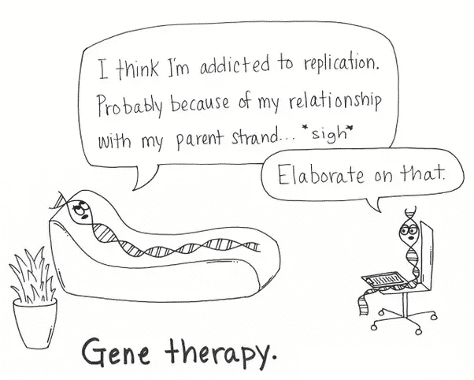

NOIDA,UP


NATURE BIOTECHNOLOGYNEW
New drug approvals reached an all-time high in 2023, with five gene therapies, the first CRISPR–Cas9-edited therapy and a disease-modifying Alzheimer’s drug.

MIT NEWSNEW
MIT scientists build a system that can generate AI models for biology research BioAutoMATED, an open-source, automated machine-learning platform, aims to help democratize artificial intelligence for research labs.

SCIENCE DAILYNEW
New findings reveal that the body undergoes significant, systematic changes across multiple organs during prolonged periods of fasting. The results demonstrate evidence of health benefits beyond weight loss, but also show that any potentially health-altering changes appear to occur only after three days without food.
BIOSCIENCE BULLETIN
DAILY MEMES
Top News
- Arizona Bioscience News: ASU patents in top 10; New GT Medical leader; MCCCD connecting bio startups.
- Biopharmaceutical company PlasmaGen Biosciences has raised Rs 225 crore (roughly $27 million) in equity funding from UK-based investment management firm Artian Investments, Ashish Rameshchandra Kacholia and other high-net-worth individuals (HNIs).
- Crown Bioscience launches large-scale organoid panel screening platform for accelerated preclinical oncology drug discovery
- Axol Bioscience introduces CiPA-validated human stem cell-derived ventricular cardiomyocytes to help improve drug discovery
Latest News
- Bioscience company Absolute featured as world's 100 most promising impact startups at Nasdaq
- Researchers based at the National Institute of Immunology (NII), New Delhi, and Yenepoya University, Mangalore, have uncovered the crucial role of Protein kinase 2 (PfPK2)
- The Science Undergraduate Research Conference (SURC) hosted by Azim Premji University in December 2023 offered this experience to undergraduate students from across India pursuing science research
- Climate change, propelled by human activities, presents a substantial threat to insect populations worldwide, impacting their behavior, fitness, and distribution. Subhash Rajpurohit and his research group at Ahmedabad University, Gujarat